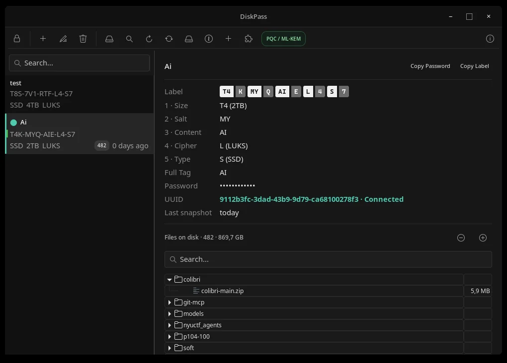

Physische Kennzeichnung
Fünf Felder, individuelles Datenbankschema, Typ- und Kapazitätskataloge, zufälliges Salt je Medium.
Verwalten Sie HDD-, SSD-, USB- und LTO-Archive mit kompakten physischen Tags. Passwörter, Notizen, Dateisnapshots und Metadaten liegen in einer separat geschützten lokalen Datenbank.

Fünf Felder, individuelles Datenbankschema, Typ- und Kapazitätskataloge, zufälliges Salt je Medium.
Volume-Passwörter, Verschlüsselungsmethoden, Notizen und Tag-Zuordnungen in .dpdb.
Dateibaum-Snapshots, Offline-Navigation und archivübergreifende Suche.
Optionale Rechneroberfläche mit separatem Zugangscode und geschützten Einstellungen.
Fünf Merkmale werden nach einer datenbankspezifischen Blockreihenfolge codiert. Jeder Block erhält ein schlüsselabhängiges Prüfzeichen.

Der Tag ist ein pseudonymer Bezeichner, kein Chiffrat. Statistische Muster können erkennbar bleiben.
Moderne PQC-Datenbanken nutzen einen signierten OpenPGP-Schlüsselumschlag mit ML-KEM/Kyber sowie ein XChaCha20-Poly1305-AEAD-Payload.
Physische Tags sind Kennungen, kein Geheimtext. Rechneroberfläche und Steganografie ersetzen keine Verschlüsselung.
GPGME verwaltet Schlüssel und Signaturprüfung. PQC benötigt GnuPG 2.5+; Signaturen sind nicht postquantenfest.
AEAD für .dpdb mit AAD-Headerbindung und größenbasiertem Padding.
Konzeptioneller Argon2id/XChaCha20-Poly1305-Ablauf; andere Schlüsselschutzmodi werden nicht dargestellt.

OpenPGP-Signaturen sind nicht postquantenfest; Empfänger-Key-IDs können sichtbar bleiben.
Das Diagramm zeigt das Einbetten und Extrahieren einer verschlüsselten Datenbank aus einer Trägerdatei.

Steganografie ersetzt keine Verschlüsselung. LSB/DCT-Einbettung kann erkannt werden, und Transkodierung kann die Nutzlast zerstören.
Wählen Sie ein Linux-Paket oder bauen Sie die Anwendung aus dem Quellcode.
DEB-, RPM- und AppImage-Pakete sind nach ihrer Veröffentlichung auf GitHub Releases verfügbar.
sudo apt install git build-essential pkg-config \
libgtk-3-dev libglib2.0-dev libgpgme-dev \
libsodium-dev libcjson-dev libjpeg-dev libwebp-dev \
libpango1.0-dev liblzma-dev imagemagick \
bluez fonts-dejavu-coregit clone https://github.com/Sergei768/Diskpass.git
cd Diskpass
chmod +x ./build.sh
./build.shdiskpassFühren Sie build.sh als normaler Benutzer aus, ohne sudo. Benötigt wird GPGME ≥ 1.24.1; für PQC zusätzlich GnuPG 2.5+ mit ML-KEM. Ältere Distributionen bieten diese Versionen möglicherweise nicht.